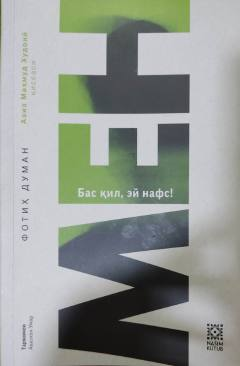

MBInsonning o'z nafsiga qarshi ichki kurashini tasvirlovchi qissa.
Bu kitob turk yozuvchisi Fotih Dumanning 'Aziz Mahmud Xudoiy qissasi' seriyasidan bo'lgan 'Men: Bas qil, ey nafs!' nomli asari bo'lib, Avazxon Umar tomonidan o'zbek tiliga tarjima qilingan. Asar Istanbul shahrida kechayotgan voqealar fonida insonning o'z nafsiga qarshi kurashi, ichki iztiroblar va ma'naviy qidiruv mavzularini yoritadi. Nasim Kutub nashriyoti tomonidan chop etilgan.